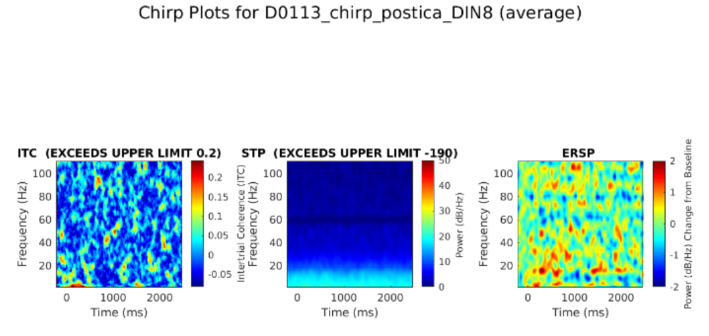
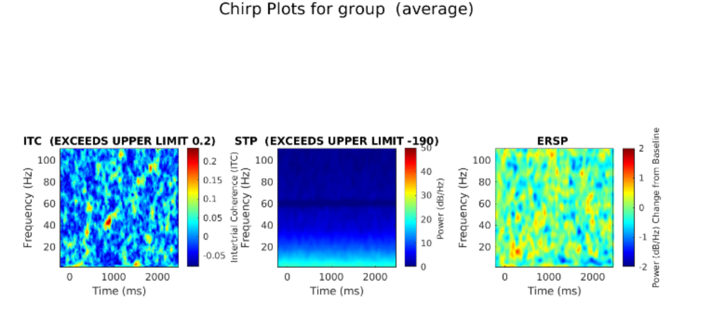
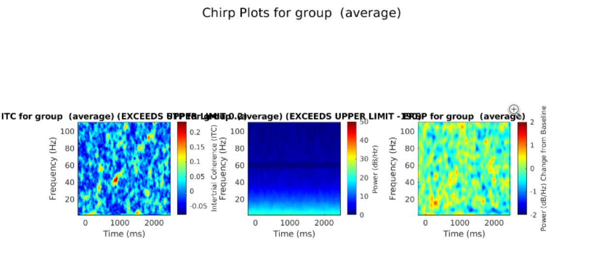

PLotting Chirp ITC, ESPR, and STP DATA
Overview
The eeg_htpVisualizeChirpItcErsp function generates visualizations for ERP analysis based on intertrial coherence (ITC), event-related spectral potential (ERSP), and Single-Trial Power (STP) computed by the eeg_htpCalcChirpItcErsp function. It supports individual or grouped EEG data and allows flexible visualization options such as group averaging, contrasts, and regional analysis.
Chirp refers to an auditory stimulus that contains white noise busrt controlled by a sinusoid linearly increasing from 0 to 100 hz. The EEG files that are inputted into this function will contain this stimulus. ITC is used to measure how consistent one's brain is across multiple trials, a low ITC is equivalent to more variabliity. ERSP is a measure of even-related brain dynamics induced in the eeg spectrum by stimulus or event. STP is the probability in which a study is able to determine the difference between the actual effects and chance occurence of a treatment.
Function Syntax
[EEGcell, results] = eeg_htpVisualizeChirpItcErsp(EEGcell, varargin)
Inputs:
EEGcell: A cell array of EEGLAB structures containing preprocessed EEG data. The strucutres are required to have had chirp data as in ITC, ERSP, and STP data fields in each EEG structure.
Optional Parameters:
outputdir: Directory to save output visualizations (default: system temp directory).
groupids: Vector of integers specifying group membership for EEG datasets (default: all in one group).
groupmean: Boolean indicating whether to compute and plot group averages (default: true).
singleplot: Boolean indicating whether to combine group and individual data in a single plot (default: true).
contrasts: Cell array of group pairs for contrast calculations (e.g., {{1,2}} for Group 1 minus Group 2).
averageByRegion: Boolean to average data by predefined brain regions (default: false).
Outputs:
EEGcell: Updated cell array with added results in the .etc.htp field.
results: A structure summarizing the generated ERP visualizations.
The function will also create a plot and save it to the output directory, here are examples of those plots:
Here is when groupmean is set to false the function will output a plot for each eeg in EEGcell:

Here is when groupmean is set to true, the function will only generate a single plot of the group mean for each eeg in EEGcell:

Here is when groupmean is set to true and singleplot is set to true:

Methods
Prepare EEG Data Ensure your EEG data is preprocessed and organized in a cell array format.
EEG1 = pop_loadset('subject1.set');
EEG2 = pop_loadset('subject2.set');
EEGcell = {EEG1, EEG2}; % Combine EEG datasets into a cell array
Call eeg_htpVisualizeChirpItcErsp Run the function, specifying optional parameters as needed.
[EEGcell, results] = eeg_htpVisualizeChirpItcErsp(EEGcell, ...
'outputdir', 'path/to/output', ...
'groupids', [1, 1, 2, 2], ...
'groupmean', true, ...
'contrasts', {{1, 2}}, ...
'averageByRegion', false);
Review Visualizations
The function generates ITC, ERSP, and STP plots for each group or individual. Files are saved in the specified outputdir.
Key Features
Group-Averaged Plots: When groupmean is enabled, the function computes group averages for ITC, ERSP, and STP. Contrasts between groups can also be plotted if specified in contrasts.
Regional Analysis: If averageByRegion is set to true, the function reduces data dimensionality by averaging channels into predefined brain regions.
Contrast Visualization: Differences between groups are calculated and displayed as additional plots.
Custom Channel Filtering: Specific channel analysis can be performed by modifying the channel parameter.
Example
% Load EEG data
EEG1 = pop_loadset('subject1.set');
EEG2 = pop_loadset('subject2.set');
EEGcell = {EEG1, EEG2};
% Generate visualizations
[EEGcell, results] = eeg_htpVisualizeChirpItcErsp(EEGcell, ...
'outputdir', 'path/to/output', ...
'groupids', [1, 2], ...
'groupmean', true, ...
'contrasts', {{1, 2}}, ...
'averageByRegion', false);
% Review results
disp(results);
Additional Notes
Output Directory: Ensure the specified directory exists to avoid errors.
Group IDs: The groupids vector must match the number of datasets in EEGcell.
Contrast Calculations: Useful for comparing experimental conditions or patient groups.
Data Integrity: Verify preprocessing steps before visualization to ensure accurate results.